About Me
My Professional Background
I am a DevOps Engineer at Tech Mahindra working for
Telefónica Germany, contributing to the CI/CD, automation, and release
ecosystem of large-scale iOS & Android applications across 7 telecom brands.
I specialise in pipeline engineering (Jenkins/GitLab), on-prem Mac server administration,
HealthCheck automation, iOS certificate management, and end-to-end DevOps solutions.
My colleagues describe me as a quick learner with a practical approach to solving
complex technical problems. I’ve delivered multiple long-pending automation initiatives
and received a Pat-on-Back Award from my manager for outstanding performance.
Experience
Projects
Publication
Skills
Technologies I Work WithDevOps & Cloud
CI/CD • Infrastructure • Cloud-native delivery AWS – EC2, EKS, ECR, IAM, VPC, S3
AWS – EC2, EKS, ECR, IAM, VPC, S3
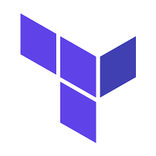
Terraform (IaC) Docker & Containerization
Docker & Containerization
Kubernetes – Deployments, Services, Ingress
 Helm Charts
Helm Charts
 Ansible Automation
Ansible Automation
Jenkins Pipelines (CI/CD)
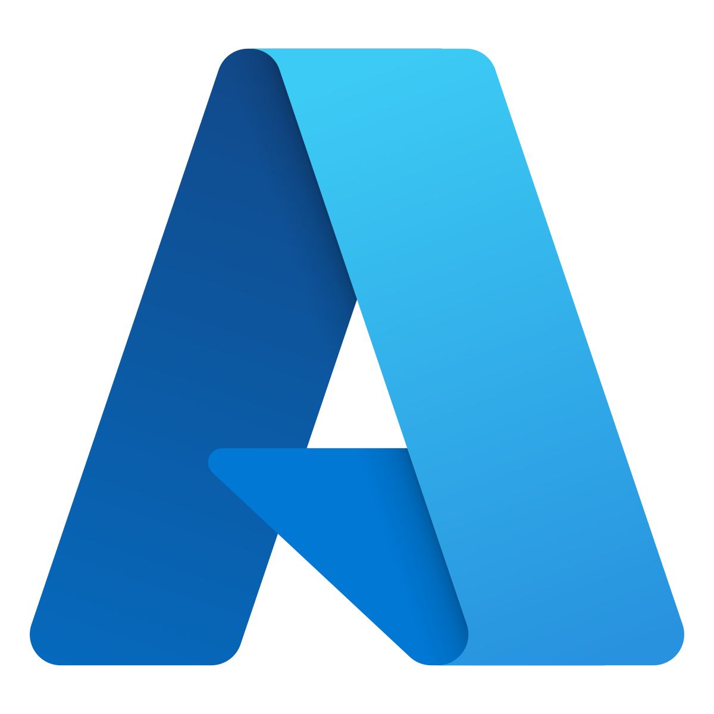
Azure (Basics)Backend Development
APIs • Automation services • Micro-tools Python
Python
FastAPI
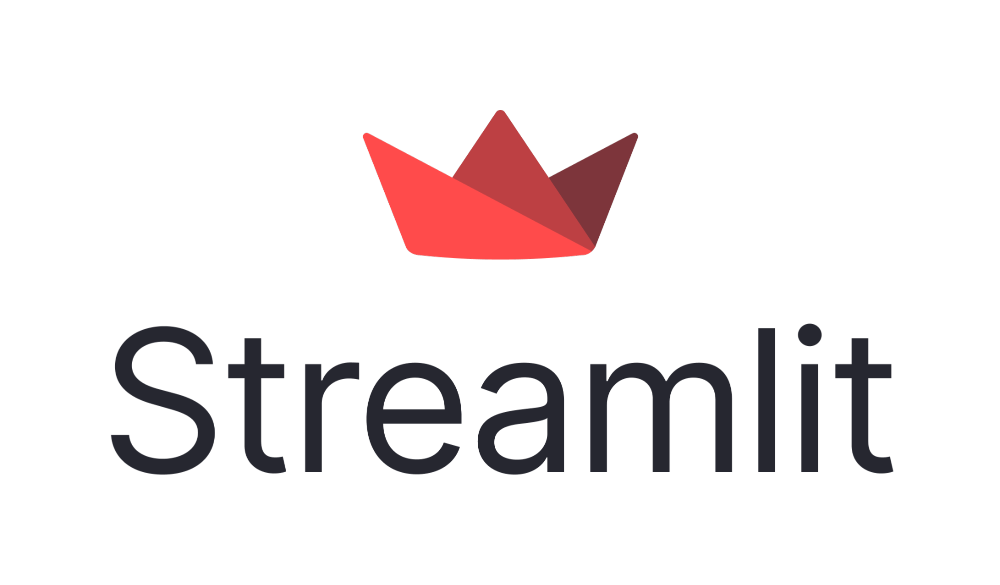
Streamlit (Dashboards)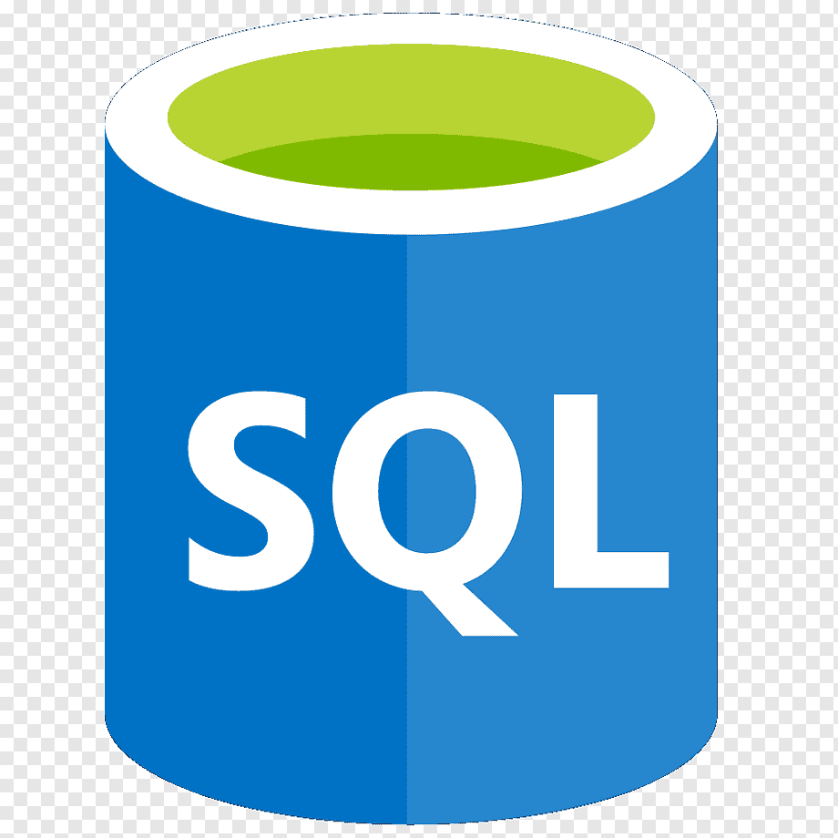
SQL (Queries, Joins, Procedures)Automation & Tools
Scripting • Versioning • Productivity systemsBash / Shell Scripting
 Git & GitHub
Git & GitHub
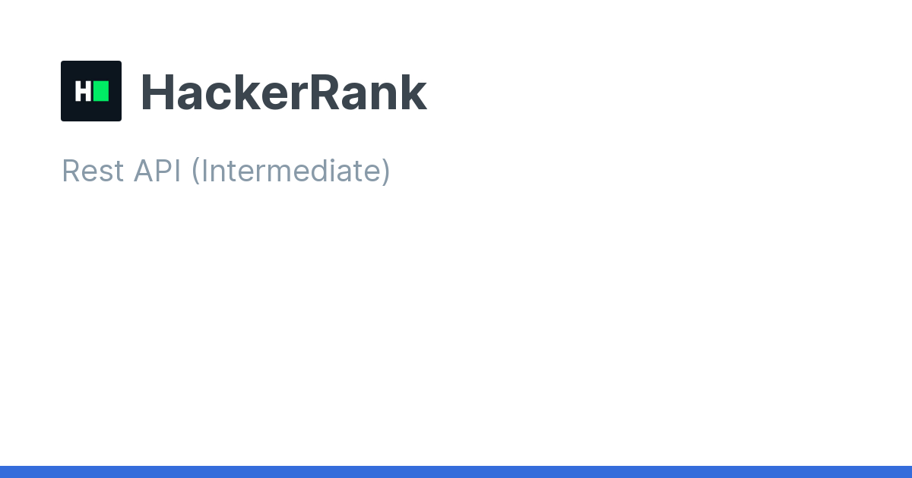
REST APIs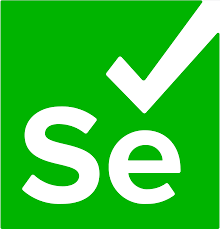
Selenium Automation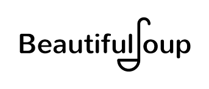
BeautifulSoup (Web Scraping)Databases
Design • Query optimization • Data modeling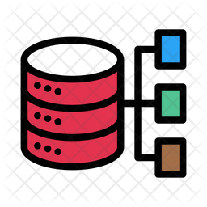
RDBMS – MySQL, MS SQL NoSQL – MongoDB
NoSQL – MongoDB
Data & Visualization
Processing • Analysis • Reporting Pandas
Pandas
 NumPy
NumPy
Matplotlib
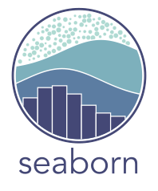
SeabornTableau
Excel
Qualification
My Professional JourneyDevOps Engineer
Tech Mahindra · Bengaluru, India Client: Telefónica GermanyB.Tech, Electronics & Telecommunication
Minor: Data Analytics KIIT University, BhubaneswarIntermediate (Science) – CBSE
Rajiv International School, MathuraMatriculation – CBSE
Rajiv International School, MathuraPortfolio
My Projects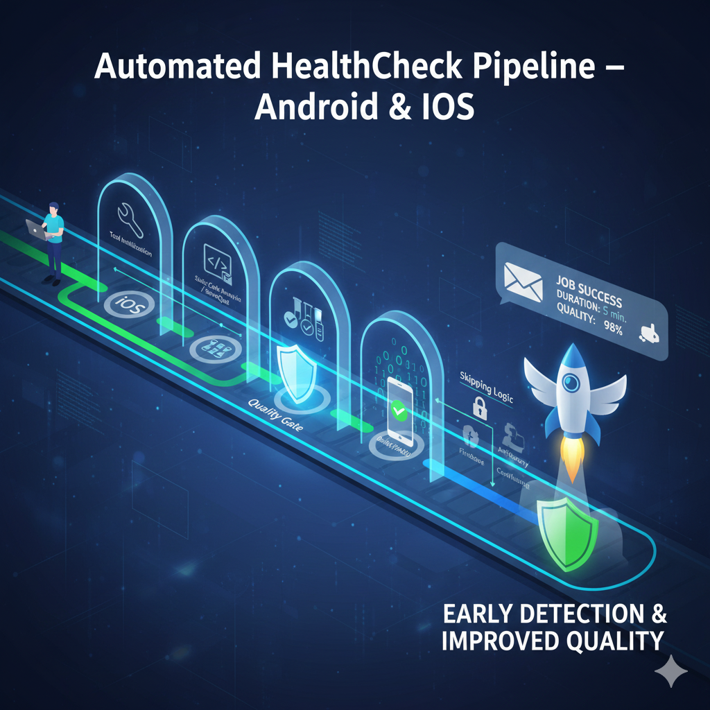
Automated HealthCheck Pipeline – Android & iOS
Smart CI Pipeline for Early Build Validation & Quality Gates
Overview: Designed and implemented a fully automated Jenkins HealthCheck pipeline for Android & iOS projects to validate branch stability, catch issues early, and ensure production readiness during ongoing development.
Client Requirement: Telefónica Germany needed a fast, reliable and automated mechanism to detect failing tests, code quality issues, build breaks, or certificate inconsistencies before entering release pipelines.
Pipeline Coverage: HealthCheck flow executes SCM checkout, tool initialization, unit tests, JUnit/Jacoco reports, SonarQube scans, debug & release builds, APK/AAB archiving, and structured notifications for every nightly run.
Smart Stage Skipping: Introduced isHealthCheckJob() method to automatically
skip upload-related stages (Firebase, Artifactory, Confluence) while ensuring build & quality
stages always run for the HealthCheck pipeline.
Advanced Notification System: Implemented custom Slack & Email notifications running in
post { always }, sending job result, duration, build URL, and key metrics to
10+ recipients across Tech Mahindra & Telefónica teams.
Stability & Debug Fixes: Resolved failing JUnit, undefined BRANCH_NAME issues,
SonarQube report-task.txt errors, missing credentials, and added retry logic,
achieving consistent, reliable scans.
Robust Testing: Validated pipeline in isolated branch using a temporary Jenkinsfile, stress-tested via cron triggers every 4 minutes, and then merged final logic into a unified production Jenkinsfile used for both Android & iOS variants.
Impact: Reduced manual QA checks, enabled early detection of critical build problems, improved code health, and tightened release workflows across multiple telecom brands.
Tech Stack

Internal Project

Jenkins Upgrade Rollback & CI Infrastructure Recovery
High-Severity Incident | Release-Saving Operation
Incident Overview: Jenkins was auto-upgraded to 2.500+ by an external team, causing major failures — pipelines crashed, nodes disconnected, plugins broke, and job configurations disappeared.
Root Cause: The upgraded Jenkins version dropped compatibility for Java 11. Our environment used a mix of Java 11 & Java 17 across nodes and pipelines, causing complete CI system instability.
Critical Decision: With a release scheduled on Monday (incident occurred Thursday), we chose a full rollback to the last stable version 2.462.1 instead of migrating all nodes & pipelines to Java 17.
Rollback Execution (AlmaLinux 9): Completed in 3 days including weekend work — restored Jenkins WAR, rebuilt service configs, re-linked plugins, fixed node paths, and validated all pipelines post-recovery.
Remaining Issue: All systems restored except LDAP authentication which was later handled by a senior engineer. CI workflows recovered 100% before release day.
Tech Stack
Internal Project

Effortless YouTube to Spotify Sync
Streamlined Playlist Management Across Platforms
Overview: Automated the synchronization of YouTube playlists with Spotify, ensuring seamless music management across platforms.
API Integration: Employed Python to integrate YouTube and Spotify APIs, processing 100+ videos with 95% accuracy, demonstrating advanced API handling and optimization.
Innovative Automation: Revolutionized playlist management with an innovative solution that saves time and enhances user experience, showcasing problem-solving and automation skills.
Tech Stack
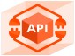
View Code View Video

Task Management System
Efficient Task Handling: Developed a robust task management system using MSSQL and Flask, enabling seamless CRUD operations for efficient task handling.
Streamlined Data Management: Implemented a Python-based backend with pyodbc for smooth database interaction, ensuring reliable data storage and retrieval.
Interface: Interface: Implemented a responsive ReactJS frontend, providing an intuitive user experience.
Tech Stack
View Code View Video

Crypto Currency stats web scraped
Unveiling Cryptocurrency Trends
Efficient Data Harvesting: Scraped data from 5 pages, with each page containing 100 rows of cryptocurrency information.
Automation and Scalability: Implemented a headless Chrome browser for automated data extraction without GUI interruptions.
Designed the script to navigate through pagination, ensuring scalability for handling large datasets effortlessly.
Tech Stack
View Code
Amazon Watches Web Scraping
Scrapy Showcase: Unveiling the World of Amazon Watches
Dynamic Product Details: Witness the power of Scrapy as it dynamically extracts key product details such as titles, ratings, discounts, and technical specifications, providing a comprehensive view of each analog watch.
Smart Data Processing: Explore how Scrapy efficiently processes and structures extracted data, transforming it into a well-organized dictionary. Learn how to handle complex structures like technical specifications effortlessly.
Tech Stack
View Code

Solar Power Plants
Analysis of 2 Power Plants to see the efficiency and shortcomings
Unveiled Solar Symphony: Analyzing 34 days of solar power data every 15 minutes, discovered nocturnal power generation absence, pinpointing optimization opportunities for specific inverters.
Efficiency Odyssey: Delved into inverter inefficiency, proposing maintenance strategies for increased power yield. Identified intriguing correlations between irradiation, DC power, and AC power, providing valuable insights into the solar power generation process.
Comparative Brilliance: Unearthed a tale of two solar kingdoms—revealing significant differences in total yield but surprising statistical similarities in daily yield mean. A captivating journey through data, unlocking the secrets of solar energy optimization and performance enhancement.
Tech Stack
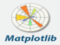
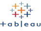
View Tableau Dashboard 1 View Tableau Dashboard 2 View Tableau Dashboard 3 View Jupyter Notebook

Sentiment Analysis of News Articles
Numeric Sentiment Unveiled: Decode Web Articles with Precision Metrics
Swift Sentiment Analysis: Fast-tracks sentiment analysis for web articles, quantifying positivity, negativity, polarity, and subjectivity with precision.
Numeric Linguistic Insights: Provides numeric metrics—average sentence length, complex word percentage, fog index—for a deep dive into linguistic intricacies.
Custom Sequencing Power: Tailors numeric outputs to a user-defined URL_ID order, ensuring a quick grasp of sentiments and linguistic nuances.
Tech Stack
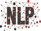
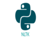
View Jupyter Notebook View Repository

INDIAN CRIME ANALYSIS
Unmasking India's Decade of Crime: Insights, Trends, and User-Friendly Analysis
Comprehensive Crime Dataset: Explored a rich dataset spanning over a decade, offering insights into various crime types reported across Indian states and districts from 2001 to 2012.
Data-Driven Insights: Uncovered trends, hotspots, and crime severity, empowering decision-makers with valuable information for law enforcement and public safety strategies.
User-Friendly Analysis: Utilized the Streamlit framework, providing an interactive and accessible interface for users to engage with and understand India's complex crime landscape.
Tech Stack
View Repository View Web Platform

Indian Cities AQI Analysis
Unraveling Air Quality Dynamics: Strategic Insights and Data-Driven Awareness
Unveiling Trends: Explore India's air quality dataset, unraveling patterns, and trends in pollutant levels across cities.
COVID-19 Impact: Witness the transformative effects of pandemic lockdowns on air quality indices, revealing the story of atmospheric changes.
Tech Stack
View Jupyter Notebook View Repository
EMAIL CLASSIFICATION
Enhancing Email Management with an Impressive 98% Accuracy Using Streamlit
Analyzed and developed an XGBoost model for email classification, distinguishing between spam and legitimate emails.
Impressive Accuracy: Achieved an outstanding accuracy rate of 98.8% on the training dataset and maintained a robust 98% accuracy on the test dataset, ensuring reliable email classification
Streamlit Deployment: The model is accessible for email classification through a user-friendly interface created using the Streamlit framework, making it convenient for users to determine whether an email is spam or not.
Enhanced Email Management: Empower users to efficiently manage their email inboxes by quickly identifying and filtering out spam emails, enhancing overall email management and security.
Tech Stack
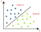
View Repository View Web Platform

LOAN DEFAULTER CLASSIFICATION
Empowering Lenders with Precision: Unveiling In-Depth Loan Insights and a 95% Accurate Default Prediction Model.
Conducted a data analysis project using the 'credit_risk' dataset, providing valuable insights for individuals and companies engaged in lending loans.
Comprehensive Insights: Explored various facets of loan data, offering valuable insights into loan seekers and their creditworthiness.
Highly Accurate Model: Trained an XGBoost machine learning model with an impressive accuracy rate of 95% to predict loan defaulters, ensuring reliable risk assessment for loan lenders.
Informed Decision-Making: Equipped loan lenders with the tools and insights needed to make informed lending decisions, enhancing the overall efficiency and effectiveness of loan management.
Tech Stack
View Repository View Jupyter Notebook

MEDHIVE
Streamlining Medical Access
MedHive - Hospital Assist Platform: Developed MedHive, a user-friendly web-based Hospital Assist platform, facilitating easy access to essential medical services like bed booking and appointment scheduling.
Convenience During High Demand: Especially valuable during peak times, MedHive streamlines the process, ensuring patients can efficiently access medical services when they need them the most.
Reliable Database: Utilized MSSQL as the database, ensuring data integrity and efficient information management for seamless patient experiences.
Tech Stack
View Repository View Video

HYUNDAI CAR FEATURES
Decoding Car Features, Prices, and Customer Trends in the UK Auto Market (2000-2020)
Conducted an in-depth analysis using data scraped from Kaggle, focusing on UK Hyundai car listings spanning from 2000 to 2020.
Economic Impact Insights: Explored the economic impact of various car listings, shedding light on the factors influencing pricing and customer demand trends over the years.
Customer-Centric Approach: Studied the evolution of customer preferences based on the features offered by Hyundai, aiding the company in making informed decisions about future offerings.
Pricing Guidance: The analysis provides valuable insights for sellers, helping them determine competitive and fair prices for Hyundai cars when listing them in the UK market.
Tech Stack
View Repository View Jupyter Notebook

BLACK FRIDAY SALE
Profiling Customers, Tracking Product Trends, and Empowering Data-Driven Decision-Making
Leveraged Kaggle's Black Friday sale dataset to delve into consumer demographics, including age, gender, geography, occupation, and marital status, offering insights for targeted inbound marketing and optimized warehousing.
Customer Profiling: Uncovered valuable customer profiles, helping businesses tailor their marketing strategies to specific consumer segments, increasing the effectiveness of sales campaigns.
Product Trends: Identified popular products year after year based on price range, providing businesses with critical information for inventory management and strategic product placement.
Data-Driven Decision Making: Empowered businesses to make data-driven decisions, enhancing marketing efficiency and optimizing product offerings for Black Friday sales events.
Tech Stack
View Tableau Dashboard 1 View Tableau Dashboard 2 View Jupyter Notebook

IPL AUCTIONS
Unleashing Data-Driven Success in Cricket"
Conducted extensive Exploratory Data Analysis (EDA) focusing on IPL auction data spanning from 2013 to 2023.
Performance Insights: Extracted valuable insights on consistently performing players, aiding teams in making informed decisions during player selection.
Budget Optimization: Analyzed team budgeting and allocation to different player types each year, offering teams strategic insights to optimize their budgets.
Empowering Negotiations: Provided a valuable resource for new players, assisting them in negotiating fair prices based on historical auction trends.
Informed Decision-Making: Equipped teams with data-driven insights to plan budgets effectively and select players strategically, ultimately improving their performance in the IPL.
Tech Stack
View Repository View Jupyter Notebook

SPOTIFY FEATURES
Unlocking Musical Insights: Delving into Spotify's Rich Dataset to Enhance User Engagement and Lead Conversion.
As a daily Spotify user, I delved into the Spotify tracks dataset, spanning a diverse range of over 26 genres.
User-Centric Approach: Utilized correlation, scatter plots, and hued line graphs to uncover valuable insights into customer preferences, enhancing the platform's ability to convert leads effectively.
Genre Diversity: Explored a wide spectrum of musical genres, allowing for a comprehensive understanding of user tastes and preferences.
Data-Driven Lead Conversion: The analysis offers data-driven strategies to boost lead conversion on the platform by aligning content and recommendations with user preferences.
Tech Stack
View Jupyter Notebook

COVID 19 DATA EXPLORATION
Pandemic Data Odyssey: Navigating the Global COVID-19 Landscape with MSSQL
Embarked on a comprehensive exploration of global COVID-19 data, unraveling the complex web of pandemic statistics.
Power of MSSQL: Leveraged the capabilities of MSSQL Server to dissect and analyze COVID-19 data, ensuring data accuracy and reliability.
Global Insight: Delved into a multitude of pandemic facets, including cases, deaths, vaccination progress, and more, offering a panoramic view of the global pandemic landscape.
Data-Driven Understanding: Armed with data-driven insights, this project deepens our understanding of the pandemic's impact and informs critical decision-making in the fight against COVID-19.
Tech Stack
View SQL queries

MOVIE CORRELATION
Decoding Hollywood's Box Office Secrets: Exploring Movie Revenue Dynamics
Join us on an exhilarating journey through the captivating world of cinema. In this project, we dive deep into the dynamics of the movie industry.
Revenue Insights: Uncover the hidden factors that impact movie revenue, from ratings and genres to the creative minds behind the scenes and budget allocation.
Data-Driven Discovery: Through rigorous analysis, we decode the mysteries of Hollywood's box office success, offering valuable insights into what makes a blockbuster.
Cinematic Exploration: Engage with our project to gain a deeper understanding of the film industry's inner workings and the secrets behind its greatest successes.
Tech Stack
View Jupyter Notebook
Research
My PublicationMedHive: Hospital Assist
Strad Research, VOLUME 10 – ISSUE 7 – 2023
Abstract
Due to the rapid growth of internet and ease of access to the public, all the necessary information is now just at some keystrokes away but the same reason has also caused overload of the information to the user. Hospital assist is a web platform that allows users to book a bed. The platform is designed to provide users with a convenient way to access medical services, especially during times of high demand. Hospital Assist uses a combination of technologies such as React, Next. JS, Tailwind CSS, MSSQL. The backend of the platform used Uvicorn, Requests, Fast API, and Fast API middleware.cors. This report will cover the development process, challenges, and benefits of using these technologies, as well as an overview of the platform's features and potential future developments.
Certifications
Extra Courses I have UndertakenPat on the Back AWARD
Bash Shell Scripting
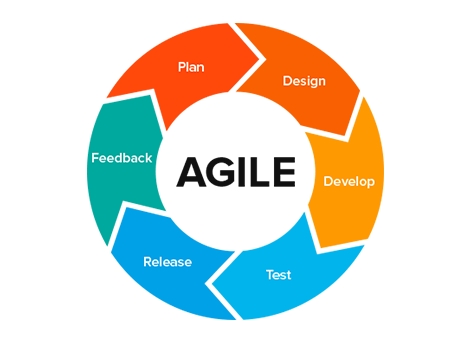
Agile Fundamentals
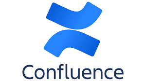
Basic and Fundamentals- with Confluence
Learn Jira

Introduction to MongoDB
Certificate of Virtual Internship 2

Python (Basic)

Rest API (Intermediate)

SQL (Advanced)
SQL (Intermediate)
SQL (Basic)
Azure Fundamentals: A Cloud Skills Challenge.

AWS Academy Machine Learning Foundations
Certifictae of Virtual Internship
AWS Academy Cloud Architecting

Machine Learning A-Z
AWS Academy Cloud Foundations

SQL for Data Science
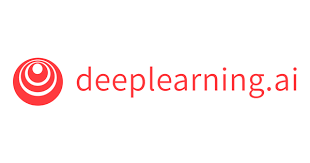
Machine Learning Specialization
Consists of 3 courses:
- Advanced Learning Algorithms
- Unsupervised Learning, Recommenders, Reinforcement Learning
- Supervised Machine Learning: Regression and Classification